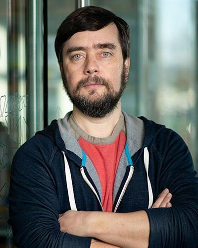

Michael Levin
Michael Levin es un ingeniero biólogo nacido en Moscú, Rusia(antigua nación soviética) en 1969 pero naturalizado estadounidense. Es graduado en ciencias de la computación y biología por la universidad de Tufts y doctor en genética en la universidad de Harvard.
Las áreas de investigación que actualmente desarrolla son las siguientes:
- Bioelectricidad del desarrollo
- Regeneración biológica
- Biología sintética
- Cáncer
Donde algunos de sus trabajos e investigaciones más notables son:
- Robots biológicos: Xenobots y antrobots
- Regeneración a través de bioelectricidad.
- Inducción de órganos a través de bioelectricidad.
Y entre sus obras más destacadas tenemos:
- A cellular platform for the development of synthetic living machines : En este artículo, Levin junto a Josh Bongard y Sam Kriegman, muestran los resultados de la creación de robots biológicos, conocidos como xenobots, a partir de células de rana.
- Kinematic self-replication in reconfigurable organisms : Artículo donde muestra la capacidad de reproducción de los xenobots por medio de autoreplicación donde los xenobots físicamente juntan células madres en su entorno para dar origen a otros xenobots.
- The bioelectric code: An ancient computational medium fo dynamic control of growth and form : Artículo donde introduce el concepto de "código bioeléctrico" y habla de como las redes celulares no neuronales procesan información y cómo se puede cambiar el comportamiento alterando este código para la regeneración de órganos sin alteración del adn.

Sobre Xenobots y Antrobots
Comentarios finales
Referencias
- Levin Lab https://drmichaellevin.org/